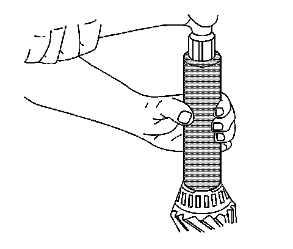
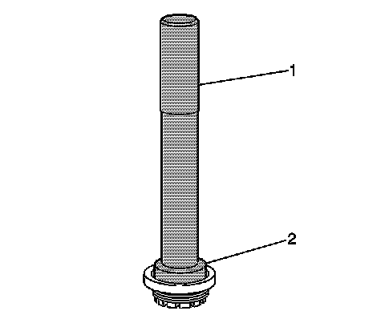
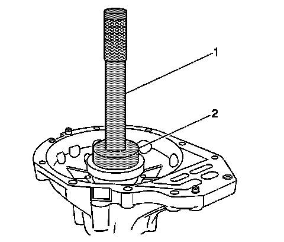
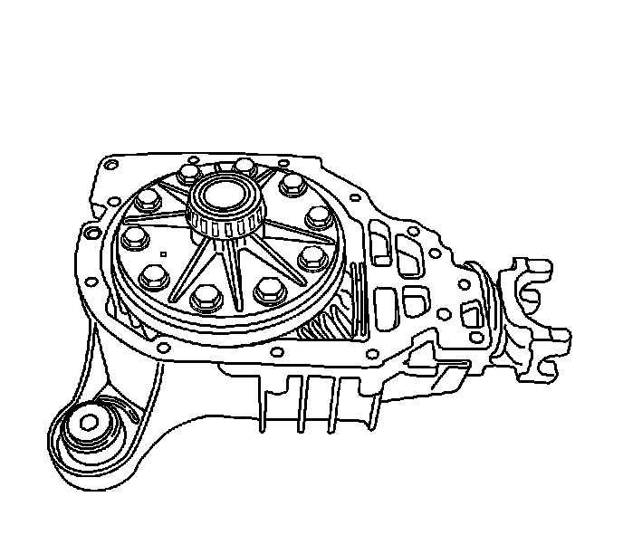
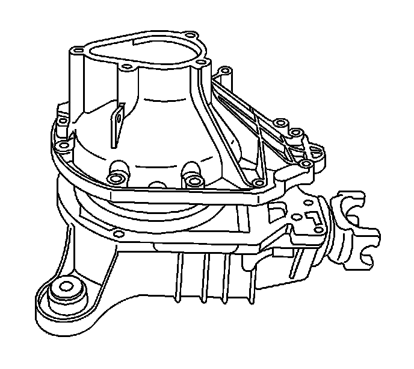
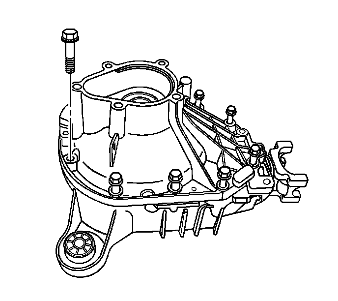
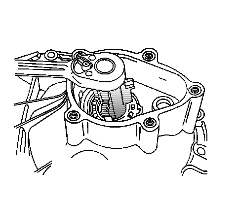
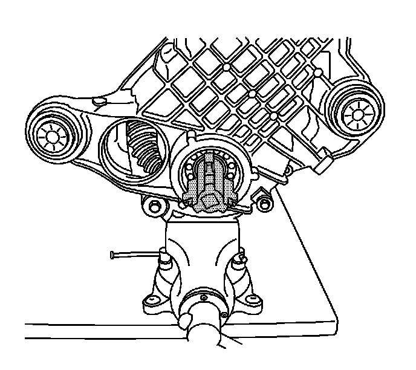
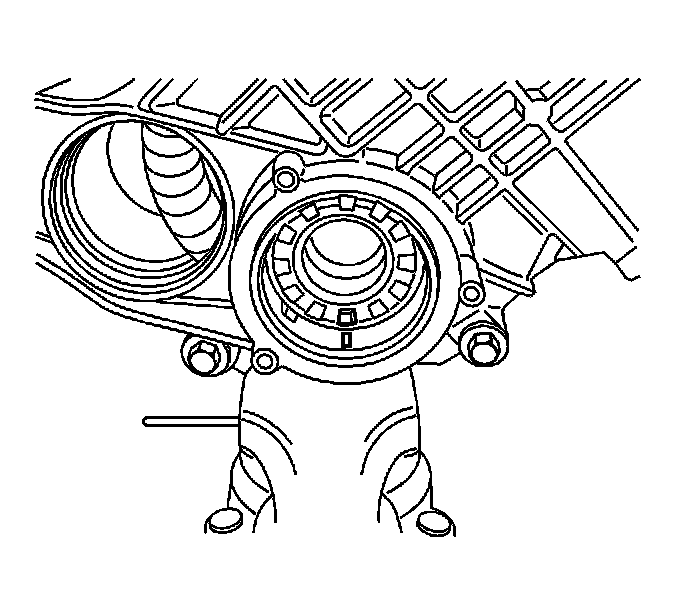

Differential Carrier Assembly Assemble
Differential Carrier Assembly Assemble
Tools Required
^ J 8092 Universal Driver Handle - 3/4 in - 10
^ J 8614-01 Flange and Pulley Holding Tool
^ J 35512 Inner Pinion Bearing Installer
^ J 36366 Pinion Oil Seal Installer
^ J 36599-A Side Bearing Nut Wrench
^ J 36603 Side Bearing Cup Installer
^ J 36609 Axle Tube Bearing Installer
^ J 36612 Output Shaft Bearing Installer
^ J 36614 Inner Pinion Bearing Installer
^ J 36615 Side Bearing Nut Wrench (9.25 inch axle)
1. Install the selective shim between the inner pinion bearing and the shoulder of the pinion gear.

2. Install the inner pinion bearing onto the pinion gear using the J 35512, 8.25 inch axle, or the J 36614, 9.25 inch axle.
3. Install the new collapsible spacer onto the pinion gear.
4. Lubricate the inner and the outer pinion bearings with axle lubricant. Use the proper fluid. Refer to Fluid and Lubricant Recommendations.
5. Install the outer pinion bearing into the differential carrier case half.

6. Install the oil seal by doing the following:
1. Install the differential carrier case half into a vise.
Place shop towels in the vise in order to protect the differential carrier case.
2. Install the seal using the J 36366. Ensure the seal flange is seated on the axle housing surface.
7. Apply sealant to the splines of the pinion yoke. Use the correct sealant. Refer to Sealers, Adhesives, and Lubricants.
8. Install the pinion gear, with the inner pinion bearing and the new collapsible spacer, into the left differential carrier case half.
9. Install the pinion yoke.
Notice: Refer to Pinion Flange/Yoke Installation Notice.
10. Seat the pinion yoke onto the pinion shaft by tapping it with a soft-faced hammer until a few pinion shaft threads show through the yoke.
11. Install the washer and a new pinion nut.
If the new pinion nut cannot be installed, perform the following steps in order to seat the pinion yoke onto the pinion so that the washer and new pinion nut can be installed:
1. Remove the pinion nut washer.
2. Install the old pinion nut.
3. Tighten the nut until a few of the shaft threads show through the nut so that the washer and new pinion nut can be installed.
4. Remove the old pinon nut.
5. Install the pinion nut washer.
6. Install the new pinion nut.

12. Install the J 8614-01 onto the pinion yoke as shown.
Notice: Refer to Fastener Notice.
Important: If the rotating torque is exceeded, the pinion will have to be removed and a new collapsible spacer installed.
13. Tighten the pinion nut while holding the J 8614-01.
Tighten the pinion nut until the pinion end play is just taken up. Rotate the pinion while tightening the nut in order to seat the bearings.
14. Remove the J 8614-01.
15. Measure the rotating torque of the pinion using an inch-pound torque wrench.
The rotating torque of the pinion should be 1.0-2.3 Nm (10-20 lb in) for used bearings, or 1.7-3.4 Nm (15-30 lb in) for new bearings.
16. If the rotating torque measurement is below 1.0 Nm (10 lb in) for used bearings, or 1.7 Nm (15 lb in) for new bearings, reinstall the J 8614-01 and continue to tighten the pinion nut.
The rotating torque of the pinion should be 1.0-2.3 Nm (10-20 lb in) for used bearings, or 1.7-3.4 Nm (15-30 lb in) for new bearings.
17. Once the specified torque is obtained, rotate the pinion several times to ensure the bearings have seated.
Recheck the rotating torque and adjust if necessary.
18. Remove the J 8614-01.
19. Assemble the differential adjuster nut into the differential nut sleeve until fully seated, 8.25 inch axle - left and right sides, 9.25 inch axle, right side.

20. Install the axle shaft bearings into the differential adjuster nut sleeve using the J 36612 (2) and the J 8092 (1), 8.25 inch S4WD axle - left and right sides, 8.25 inch F4WD axle - left side, 9.25 inch axle - right side.
21. Install the axle shaft bearing into the differential adjuster nut sleeve using the J 36609 and the J 8092, 9.25 inch axle - left side.
22. Install the differential adjuster nut assembly and new adjuster lock nut tabs into the differential carrier case using the J 36609 and the J 8092, 8.25 inch axle - left and right sides, 9.25 inch axle - right side.
23. Install the differential adjuster nut assembly into the differential carrier case, 9.25 inch axle - left side.

24. Install the differential case side bearing cups to the differential carrier case using the J 36603 (2) and the J 8092 (1), 8.25 inch axle - left and right sides, 9.25 inch axle - right side.

25. Install the differential case assembly into the left differential carrier case half.
26. Clean the sealing surface of each half of the differential carrier case and the inner axle housing to differential carrier assembly.
The surfaces must be clean of all the grease and the oil.
27. Apply a bead of sealer to one differential carrier case half sealing surface. Use the correct sealer. Refer to Sealers, Adhesives, and Lubricants.

28. Install the right differential carrier case half to the left differential carrier case half.
If the carrier case halves do not make complete contact, use the J 36599-A in order to back out the right differential adjuster nut sleeve until the differential carrier case halves make contact.

29. Install the differential carrier case bolts.
Tighten the differential carrier case bolts to 47 Nm (35 lb ft).
30. Install the differential carrier assembly into a vise.

31. While rotating the pinion yoke back and forth, turn the right side differential adjuster nut sleeve clockwise using the J 36599-A until 0.0254-0.0762 mm (0.001-0.003 in) of backlash can be felt between the ring gear and the drive pinion.
If the backlash specification cannot be obtained, turn the left side differential adjuster nut sleeve counterclockwise using the J 36599-A one notch at a time until the backlash specification can be obtained.

32. For the 8.25 inch axle, turn the left side differential adjuster nut sleeve clockwise using the J 36599-A in order to preload the differential side bearings against the differential side bearing cups.
Tighten the differential adjuster nut to 75 Nm (55 lb ft).

33. For the 9.25 inch axle, turn the left side differential adjuster nut clockwise using the J 36615 in order to preload the differential side bearings against the differential side bearing cups.
Tighten the differential adjuster nut to 75 Nm (55 lb ft).
34. Rotate the pinion several times in order to seat the pinion and differential side bearings.
35. Measure the rotating torque of the drive pinion and differential assembly using an inch-pound torque wrench.
The rotating torque of the pinion and differential assembly should be 3.4-6.2 Nm (30-55 lb in) for new bearings or 2.8-5.1 Nm (25-45 lb in) for used bearings.

36. If the rotating torque measurement is below 2.8 Nm (25 lb in) for used bearings, or 3.4 Nm (30 lb in) for new bearings, adjust the differential side bearing preload using the following steps:
1. Place an alignment mark between the differential adjuster nut sleeve and the differential carrier case, left and right sides.
2. Using the J 36599-A or the J 36615, turn the left and the right side differential adjuster nut sleeves in or clockwise one notch.
3. Measure the rotating torque of the pinion and differential assembly using an inch-pound torque wrench.
4. Compare the new measurement to the specification listed in step 35. If the rotating torque of the pinion and differential assembly is not within specifications, continue to tighten the left and right side differential adjuster nut sleeves one notch at a time on each side until the rotating torque of the pinion and differential assembly is within specifications
37. If the rotating torque measurement is above 5.1 Nm (45 lb in) for used bearings, or 6.2 Nm (55 lb in) for new bearings, adjust the differential side bearing preload using the following steps:
1. Place an alignment mark between the differential adjuster nut sleeve and the differential carrier case, left and right sides.
2. Using the J 36599-A or the J 36615, turn the left and the right side differential adjuster nut sleeves out or counterclockwise one notch.
3. Measure the rotating torque of the pinion and differential assembly using an inch-pound torque wrench.
4. Compare the new measurement to the specification listed in step 35. If the rotating torque of the pinion and differential assembly is not within specifications, continue to loosen the left and right side differential adjuster nut sleeves one notch at a time on each side until the rotating torque of the pinion and differential assembly is within specifications.
38. Once the specified rotating torque is obtained, rotate the pinion several times to ensure the bearings have seated.
Recheck the rotating torque and adjust if necessary.
39. Measure the drive pinion to ring gear backlash and adjust, if necessary.
40. Once the bearing preload and drive pinion to ring gear backlash is within specifications, perform a gear tooth contact pattern check to ensure proper contact between the pinion and the ring gear. Refer to Gear Tooth Contact Pattern Inspection.
41. Complete the assembly of the differential carrier. Refer to Differential Carrier Assembly Final Assembly.